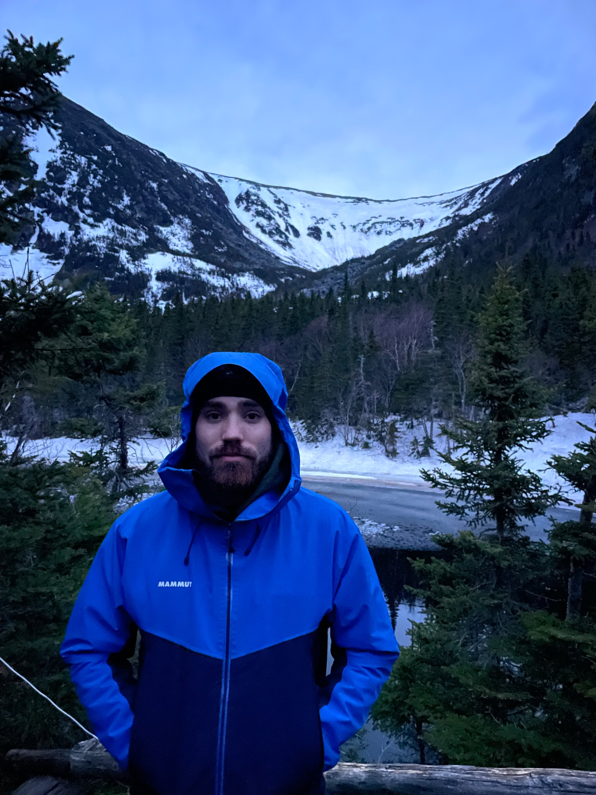

Outside,
usually.

Matt in the Mountains is an independent outdoor journal about using gear, going places, making things, and learning enough along the way to have something useful to say about it.
I built this as a home for the parts of being outside that I actually care about: trips that turn into stories, equipment that earns an opinion through use, projects that make the next adventure easier, and photographs worth keeping.
The Gear section is based around equipment I actually own and use. The Journal holds adventures and projects—from mountains and water to building, repairing and organizing the equipment that gets me there.
This is personal rather than corporate. Reviews will say how gear was obtained, recommendations will be based on experience, and the photographs are my own.
Get in touch →